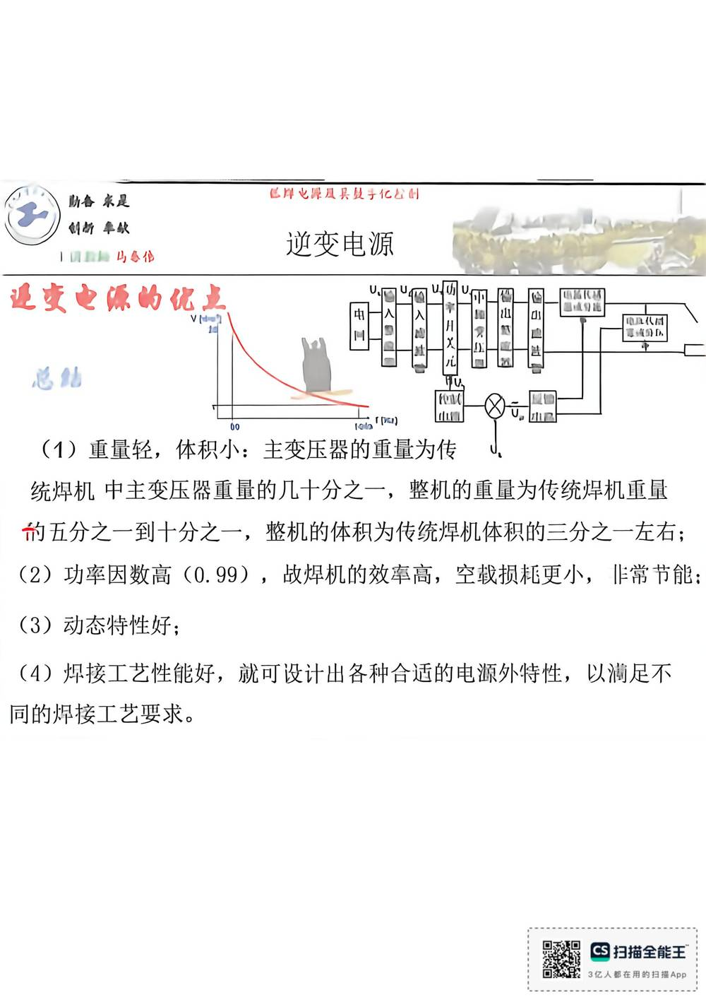

13 手写笔记/6~8周/h-w2-036 （3）动态特性好；
h-w2-036 （3）动态特性好；
📷 原图：
6~8周 焊接电源(差最后一节课)(1).pdf第 36 页（整页扫描，本库内嵌h-w2-036.jpg）
（3）动态特性好；

本页文字（OCR 整理）
- 这安也源的优立
- 已岸也厚及兵及子亿公时
- （1）重量轻，体积小：主变压器的重量为传
- 统焊机中主变压器重量的几十分之一，整机的重量为传统焊机重量
- 前五分之一到十分之一，整机的体积为传统焊机体积的三分之一左右；
- （2）功率因数高（0.99），故焊机的效牵高，空载损耗更小，非常节能：
- （3）动态特性好；
- （4）焊接工艺性能好，就可设计出各种合适的电源外特性，以滴足不
- 同的焊接工艺要求。
OCR 说明
文字由 macOS Vision 识别手写体/翻拍页面得到，错字难免（如"弧"误识为"孤"）；重点标记据此推断，请以页图为准。
对应讲义页
关联
- ← 上一页 · 总览 · 下一页 →
- 讲义：00 第6章 逆变式 导航 · 概念：04 概念地图